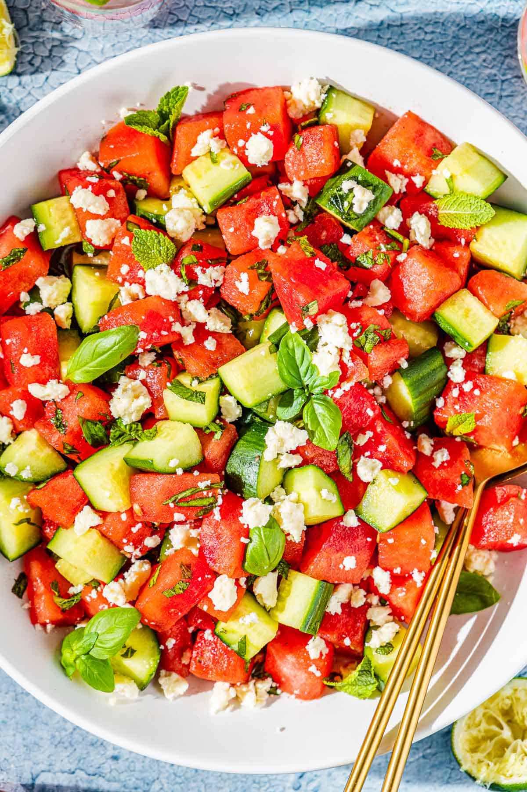

Watermelon and Cucumber Salad

Description
A refreshing salad with watermelon, cucumber, and feta cheese mixed together!
Ingredients
- 1 Large Seedless Watermelon, cut into 1-inch cubes
- 2 Cucumbers, thinly sliced
- 12 Fresh Mint Leaves, thinly sliced
- 1/4 Cup Olive Oil
- 2 Tablespoons Apple Cider Vinegar
- Coarse Salt and Ground Black Pepper
- 1 Cup Crumbled Feta Cheese
Instructions
- Gently mix watermelon, cucumbers, and mint in a large bowl
- Whisk olive oil, vinegar, salt, and pepper together in a small bowl
- Drizzle over salad and gently toss to coat
- Add feta cheese and gently mix
And that's it. Enjoy!